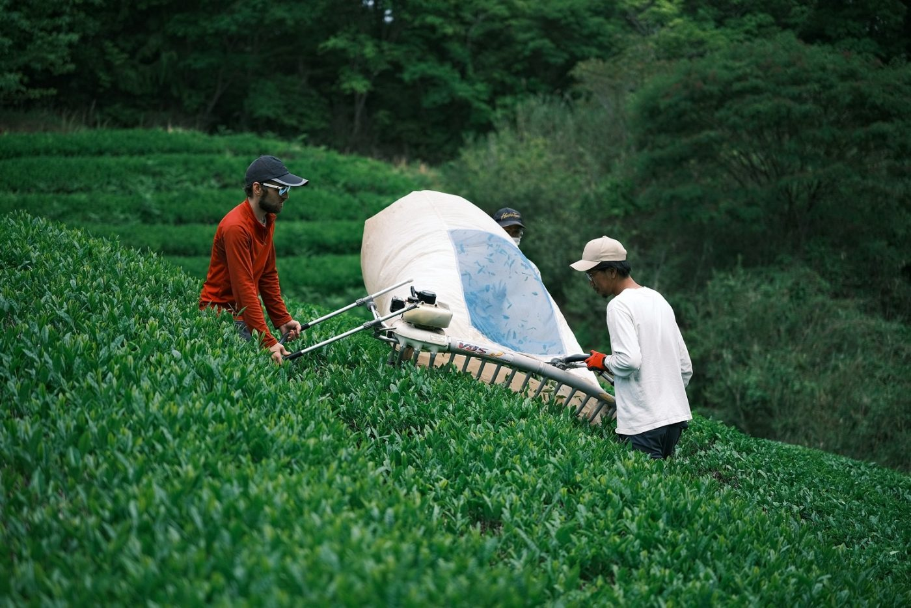
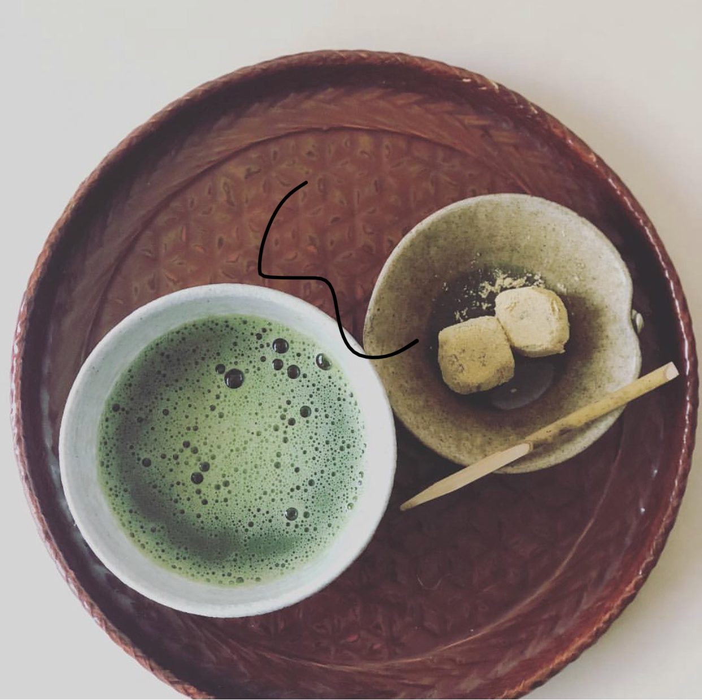
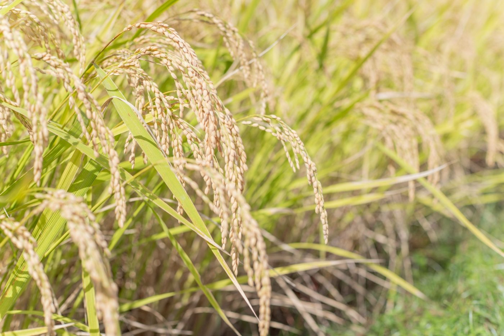
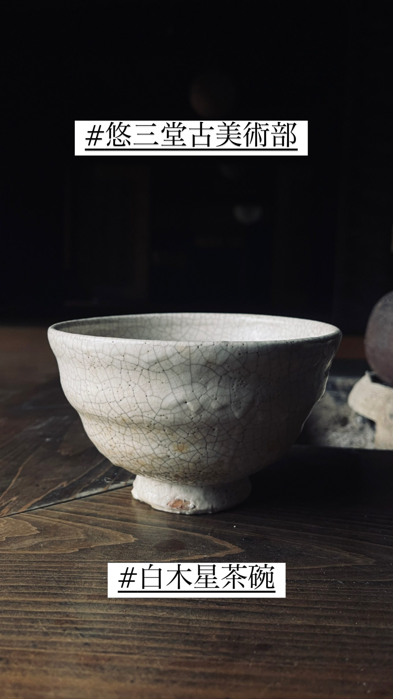
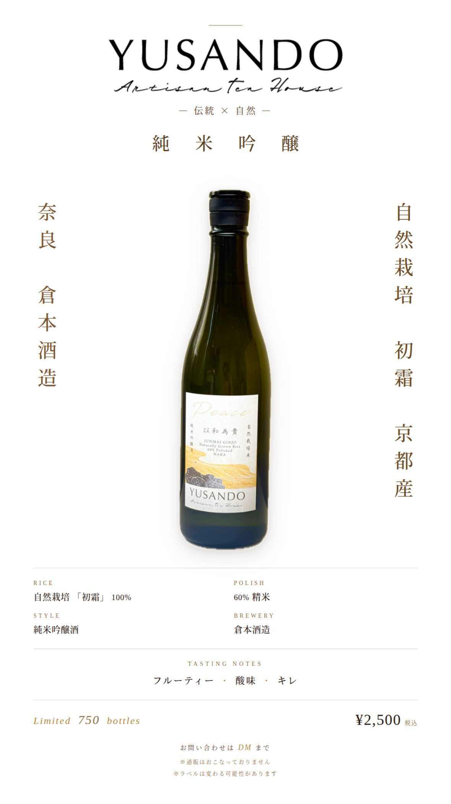
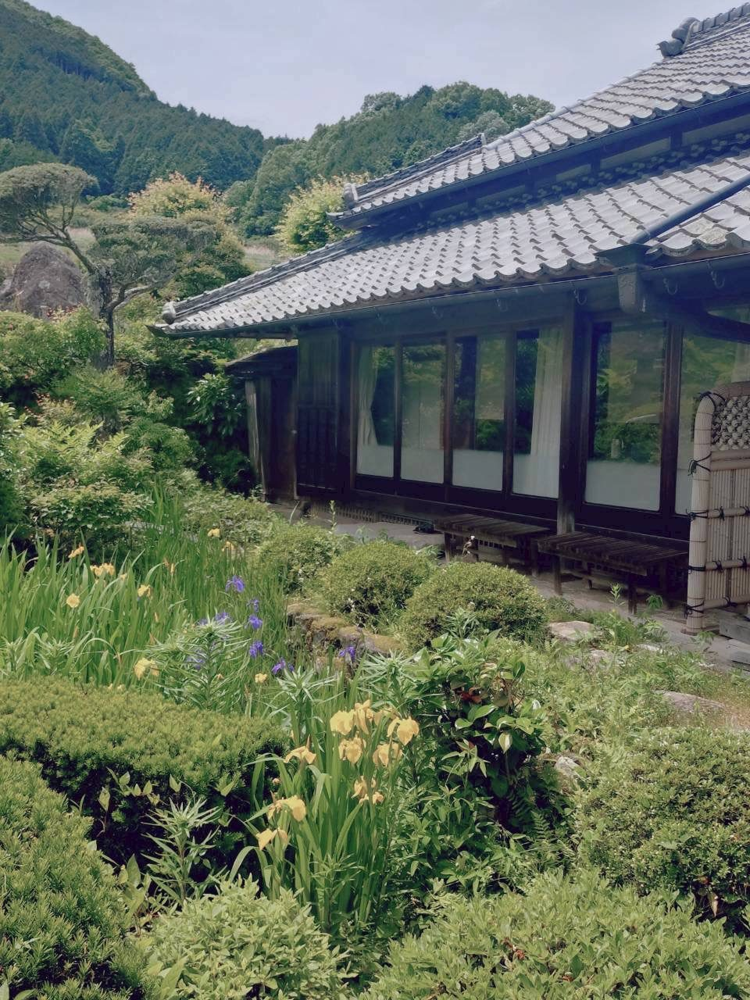
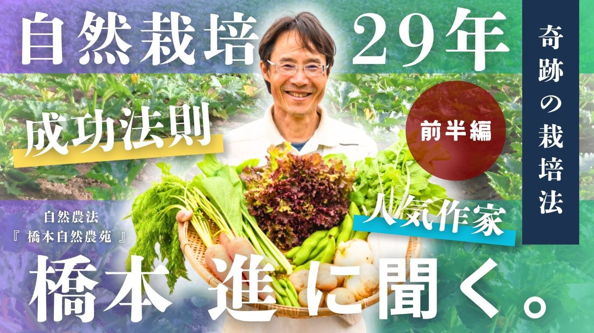

人と和し、自然と和し、時代と和する。
悠三堂のすべての営みは、ここから始まります。
Harmony above all — with people, with nature, with time.
自然栽培とアート、哲学をベースに、人生を楽しむ。
耕す。つくる。考える。味わう。
その暮らしのすべてが、悠三堂です。
生き方を支える、三つの柱。
農薬にも肥料にも頼らず、土と作物に具わる本来の力を引き出す。自然の歩みに身を委ねる、すべての営みの礎。
美を、暮らしの中心に取り戻す。眺めるにとどまらず、自らの手で生み出す側へ。鑑賞と創造のあわいを、暮らしのうちに養う。
なぜつくるのか、いかに生きるのか。自然と人、過去と現在、神と人――その結びを、問いつづける。
私たちが志すのは、生産性や効率のみを追う働き方ではありません。自然と人、過去と現在、神と人。それらがゆるやかに結ばれる場を設えること。子供とともに、家族で成長しながら、その営みを次の世代へ手渡し、世界へひろげてゆくこと。その実践のかたちが、ここに連なる九つの営みです。
すべての営みの要。自然栽培の茶を育て、世に送り出します。

「自然茶道」を打ち立てる試み。自ら育てた農産物とその加工品をもって、茶の湯のすべてを、できうるかぎり自らの手で設えます。

田を通じて、自らの食を自らの手でまかなう暮らしと、それを担う家族を育みます。

美術を暮らしのうちに取り戻し、やがて自らもつくる側に立ちます。

田からつづく、神と人をむすぶ酒づくり。

日本の伝統家屋を守り、暮らしの場として今によみがえらせます。

畑から始まった営みは、やがて悠三堂の枠を越えて広がっていきます。映像で伝え、担い手を結び、人の集う場をひらく。内で育てたものを、世界へとつなぐ三つの試みです。
悠三堂の実践と思想を、映像に託して世界へ届けるメディアです。

悠三堂の枠を越えて、自然茶の担い手と愛好家を結ぶ、業界横断の共同体です。
悠三堂の営みを、一杯の茶として味わえる場。いま、構想をあたためています。
1983年生まれ、大阪府出身。早稲田大学第一文学部東洋哲学専修卒業。
哲学を修めたのち土へ向かい、自然栽培の茶づくりを礎に悠三堂を興す。
和を以て貴しと為す。
自然栽培とアート、哲学をベースに、人生を楽しむ。
それこそが、悠三堂のあらゆる営みを貫く、ただひとつの軸です。